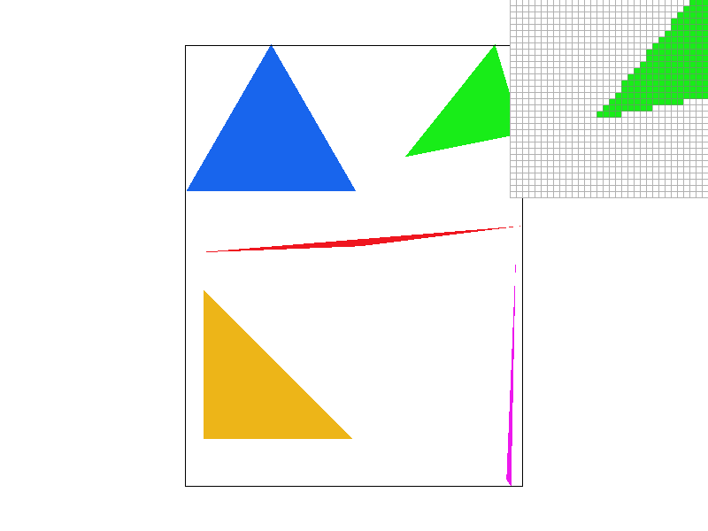
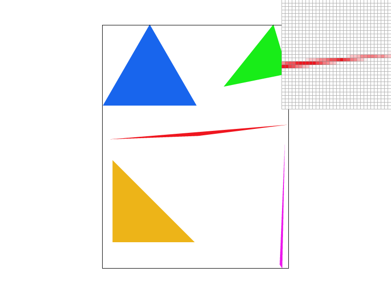
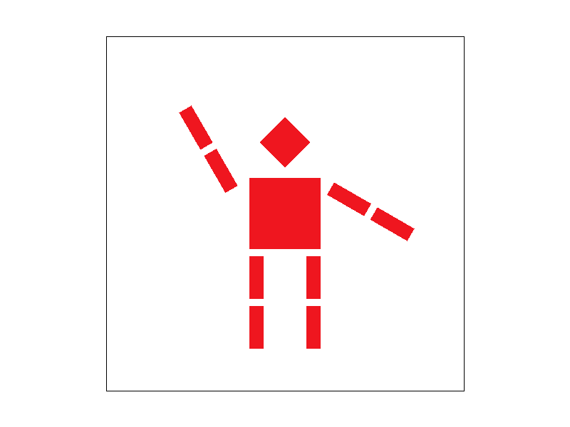
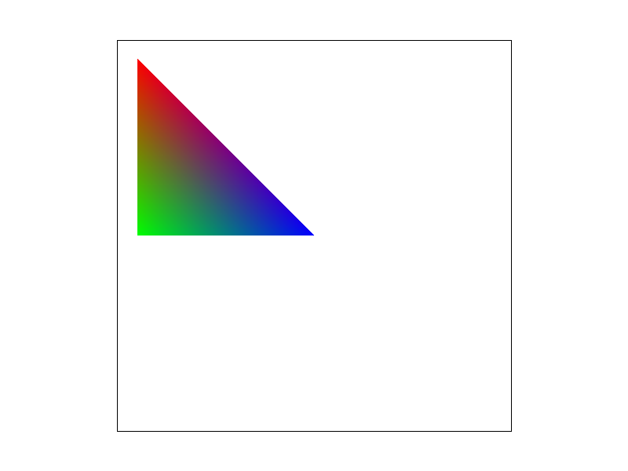
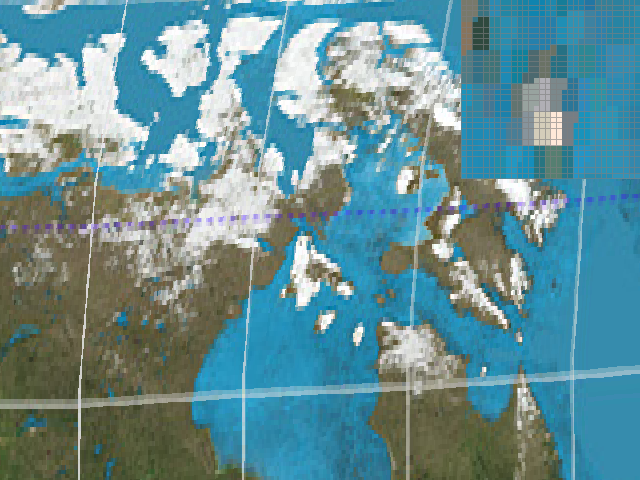
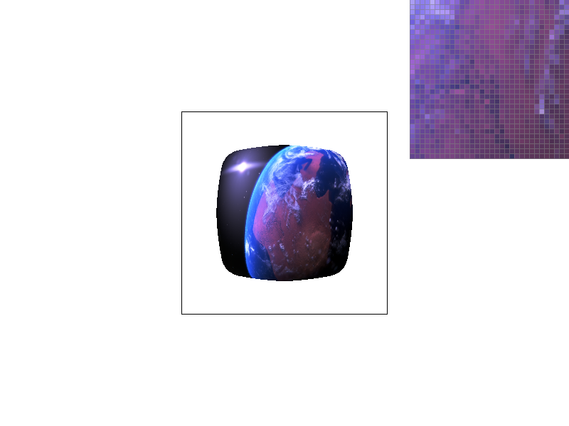

Overview
In this homework, I implemented the basic functionality to draw colored/textured triangles to the screen. To do this, I implemented the following:
1) A function takes triangle verticies and draws the corresponding triangle to the screen. This works by sampling possible points that could be in the triangle. Additionally, I calculate barycentric coordinates of the relevant points and use those to sample from the correpsonding colors or texture mip map levels to color each vertex of the color
I implement various sampling methods:
2) sub-pixel sampling for in/outside triangle to reduce aliasing from triangle edges
3) texture sampling including bilinear sampling which reduces aliasing from texture sampling
4) mip map sampling including linear sampling to reduce aliasing caused from large textures being mapped to small sections of the screen.
5) Additionally, I implemented transform matricies which allow for heirarchical affine transformations to be applied to various triangles.
I learned a lot from this homework. In particular, I learned a lot about how graphics pipelines take advantage of transforming between various spaces (like barycentric coords, texture coords, and screen space coords) to make local calculations simple.
Section I: Rasterization
Part 1: Rasterizing single-color triangles
Triangle rasterization process:
To rasterize a triangle, I loop through all potential pixels within the bounding box of the triangle. At each point (x,y), I do the following process: I check if (x+.5,y+.5) is "above" or "below" each line of the triangle. To do this, I dot product [the normal vector of each line] with [the vector from the starting point of that line segment to (x+.5, y+.5)]. I then compare that dot product to zero. If all three checks (for each of the three line segments) are >= 0 or all three are <= 0, I draw the specified color at the (x, y) pixel.
This algorithm is no worse than one that checks each sample within the bounding box of the triangle because that is exactly what I do.

Part 2: Antialiasing triangles
In order to implement supersampling, I actually didn't need to change that much of my existing code. There are a few key changes which I outline here:
I updated various parts of the code which set the sample_buffer's size (set_framebuffer_target, set_sample_rate, the RasterizerImp constructor). Instead of width*height, it is now width*height*sampling_rate. This factors out to (width*sqrt(sampling_rate))*(height*sqrt(sampling_rate)), which very related to how I treated this datastructure. Basically, before, sample_buffer[y*width+x] corresponded to pixel (x, y). Now, sample_buffer[y*width*sqrt(sampling_rate)+x] corresponds to the sample (x, y). To understand what this means, consider sampling_rate=4. Instead of sample_buffer being a 2D array of pixels, it is now a 2D array of samples (in the same row-major order).
Next, I created a fill_sample function which uses the new sample-indexed coordinate system, and updated fill_pixel to call fill_sample for each of the sampling_rate number of samples in the pixel.
Next, I updated rasterize triangle by converting all inputted coordinates into the new sample-indexed space (ensuring bounds are updated properly on both sides) and calling fill_sample instead of fill_pixel.
Finally, I updated resolve_to_framebuffer to do the downsampling. Basically, for each pixel coordinate (x, y), I sum the colors of all the corresponding samples. This is basically the box with corner (x*sqrt(sampling_rate),y*sqrt(sampling_rate)), width sqrt(sampling_rate), and height sqrt(sampling_rate). Next, I divide the sum of the colors by the sampling_rate, which results in the average color (because there are sampling_rate number of samples in the box corresponding to a pixel). This is the color written to the frame buffer.
|
sampling_rate=1
|
sampling_rate=9
|
|
sampling_rate=9
|

sampling_rate=16
|
Part 3: Transforms

In this image, I made cubeman wave!
Section II: Sampling
Part 4: Barycentric coordinates
The basic goal of barycentric coordinates is to provide a method for smooth blending of values specified for triangle verticies across entire triangles. This can be colors, texture mapping information, or other metadata.
To do this, we transform from (x,y) coordinates into (alpha, beta, gamma) coordinates, where the three entries are basically proportional distances from the corners of the triangle to each vertex. For example, if alpha is very low, then the point is very far from point A (closer to B/C). Similarly, if beta/gamma is low, the point is far from B/C respectively. Additionally, these points are defined such that alpha+beta+gamma=1.
Thus, we can easily use these coordinates to blend values along the triangle by taking a weighted sum (alpha*a + beta*b + gamma*c) where a,b,c are the values we want to blend at vertex A,B,C respectively.
For example, consider the triangle below. In this case, a,b,c=top left,bottom left,bottom right=red,green,blue respectively. As you can see, performing this weighted sum correctly blends the colors. Because alpha+beta+gamma sums to 1, this is basically a weighted average where each color is given to the proportional weight of that vertex's influence on the point.


Part 5: "Pixel sampling" for texture mapping
In the context of texture mapping, we have a triangle which we want to display a texture on. Basically, we have a triangle to draw, and uv coordinates for each vertex in texture space. To select a color from the texture for particular point (x,y) in the triangle, we first find the barycentric coordinates (alpha, beta, gamma) for the point (x,y). Next, we find the point in uv space which maps to the same barycentric coordinate position space by applying the identity ((x,y) = alpha * A + beta * B + gamma * C), where A,B,C are the coordinates in uv space of the vertices of the triangle. Next, we want to sample the a color in the texture at that location.
Pixel sampling is basically the process by which, given a coordinate in texture space (which might not be aligned at all to the texture grid), we select a color from a point (or combination of points) in the image texture we are sampling from. There are two methods I implemented. The first is nearest neighbor, where I find the pixel coordinate (x,y)=(round(u*width),round(v*height)), which correspond to just selecting the nearest pixel. With bilinear sampling, I consider the 4 integer-coordinate pixel colors surrounding (u*width, y*height). I then lerp along the x-axis between the top and bottom two. I then lerp between the resulting two colors to find the final color. The lerp keys used are basically the decimal components of u*width and y*height, respectively.
These require some bounding box checks, which I also implemented. I resolved these by clamping into the bounds.
|

sampling_rate=1, Sampling=nearest
|
sampling_rate=16, Sampling=nearest
|
|
sampling_rate=1, Sampling=bilinear
|
sampling_rate=16, Sampling=bilinear
|
There are large differences between the two methods when many nearby pixels sampled correspond to the same nearest texel in the texture. For example, this occurs when I zoom in so far that each texel takes up many pixels, or if the texture was very low-resolution relative to the size of the triangles it was mapped onto.
Even with higher sampling rate, nearest neighbor looks bad because we simply blur the boxy stretched texels instead of blurring the underlying sampling distribution.
Part 6: "Level sampling" with mipmaps for texture mapping
Basically, for each texture, we store multiple mipmap levels. Each level is 1/4 the total number of pixels, and is basically the same image downsampled in half along each axis (each pixel in a layer is the average of 4 pixels in the previous layer). This allows us to remove high frequencies in the texture space when we texture sample onto triangles by selecting a level that corresponds to an acceptable level of noise.
At Level 0, we just sample straight from the original image.
To choose what level sample we want to use, we consider how steeply we are sampling from the texture by comparing the uv coordinates of the sample point to nearby sample points. This is "taking the derivative", which we use in a long expression (the one in lecture) to calculate the level as a max of two elements, measuring the sampling derivative along the x and y axis. Thus, if the derivatives are higher, we will sample from a "blurrier" mip map level.
With nearest neighbor, we simply round the level value outputted from this function. However, this can provide obvious edges/changes between levels. Thus, we can instead linearly interpolate between levels by sampling from both and lerping their output colors by the percentage from level a to level a+1 the function outputted. Note that these texture samples might internally be nearest neighbor, linear, or bilinear texture samples, as described in the previous section.
|
L_ZERO and P_NEAREST
|
 L_ZERO and P_LINEAR
L_ZERO and P_LINEAR
|
|
L_NEAREST and P_NEAREST
|

L_NEAREST and P_LINEAR
|